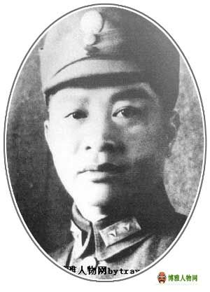

叶挺（1896～1946），字希夷,号西平。惠阳县秋长镇周田会水楼村人。中国著名的军事家，
中国人民解放军的创建者之一。1896年出生于广东惠阳县。 1911年，15岁的叶挺在惠州府立中等专业学校
读书时，就毅然剪掉辫子，义无反顾地响应孙中山反对清王朝封建统治的斗争。1912年，
叶挺考入广州黄埔陆军小学，后进入保定军官学校。1919年，叶挺投身孙中山领导的三民主主义革命，
参加了粤军，同年参加了中国国民党。后升任少校参谋、-警卫团营长。在粤军总司令陈炯明叛变时，
他率部和全团官兵一起守卫-，英勇反击数倍于已的叛军，掩护孙夫人宋庆龄脱离险境。